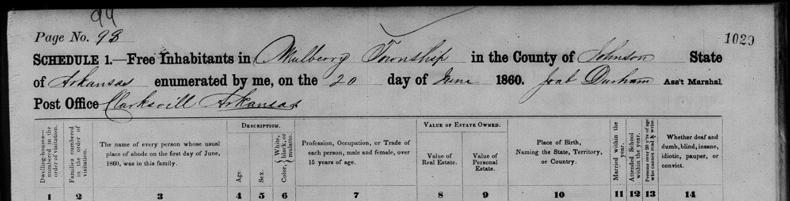
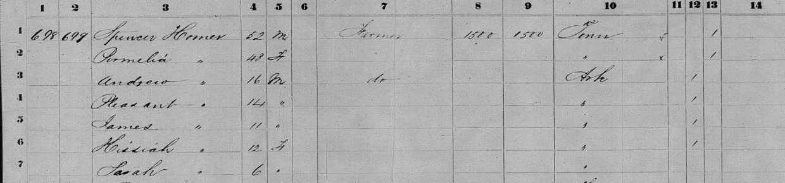
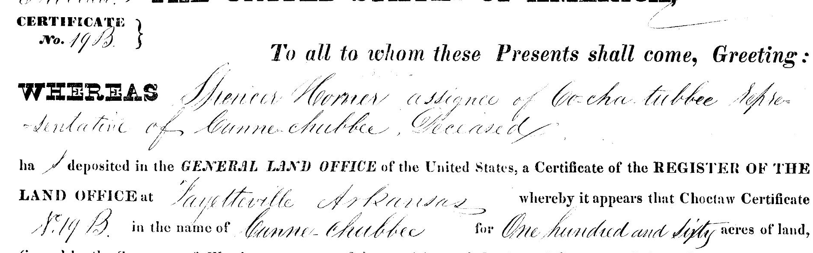
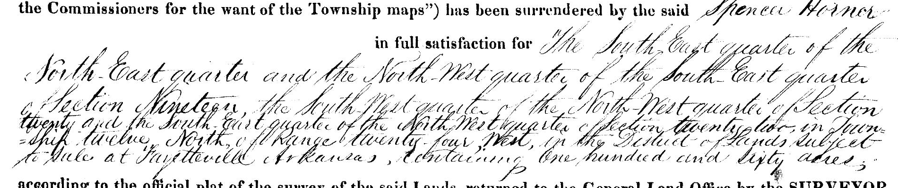
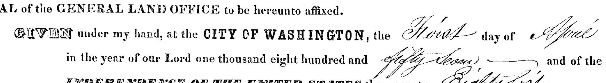

Source A: a household in the 1860 census
Core lesson | S01 | v21.2 | Read the printed aid as well as the image
Review draft: the editing assistant compared these crops with the originals; independent human source review and classroom piloting remain pending.
Spencer Horner appears in a population schedule for Mulberry Township, Johnson County, Arkansas, with Clarksville as the post office. The form collected information about people and reported property. It did not include a column naming each person's relationship to the head of household.

Two dates on one record
- 1 June 1860: reference date. Column 3 asks who lived in the family on that date.
- 20 June 1860: enumeration date. The handwritten page heading dates the enumerator's recording.
The two dates answer different questions. Do not use 20 June as the household's reference date.
Locator: dwelling 698, family 699, lines 1–7; Page No. appears 98 with another handwritten 99; stamped 1029. Original scan extracted from page 1 of the owner's “1860 census” export. NARA microfilm series/roll and provider image ID remain unverified. This is a provisional local citation, not a complete archival citation.
About the detail: a rectangular crop of the source image, without altered letters, contrast enhancement or reconstructed handwriting. The full original remains available for comparison: https://daniel-lingar.github.io/horner-archive/sources/reviewed/1860-mulberry-spencer-horner.jpeg
Source A: household detail and reading aid

Partial transcription supplied for this lesson
| Line | Name / reading | Age / sex | Occupation or reported property | Birthplace |
|---|---|---|---|---|
| 1 | Spencer Horner | 52 / M | Farmer; real estate 1500; personal estate 1500 | Tennessee |
| 2 | Permelia | Age not resolved / F | No separate valuation entered here | Tennessee, ditto |
| 3 | Andrew, provisional | 16 / M | Ditto occupation, farmer | Arkansas |
| 4 | Pleasant, provisional | 14 / M | No occupation transcribed | Arkansas, ditto |
| 5 | James, provisional | 11 / M | No occupation transcribed | Arkansas, ditto |
| 6 | Given name not confidently read | 13 / F | No occupation transcribed | Arkansas, ditto |
| 7 | Sarah, provisional | 6 / F | No occupation transcribed | Arkansas, ditto |
Uncertain readings are not scored. “Ditto” means a mark repeats the entry above; this is an editorial explanation. Do not confuse Permelia on line 2 with a similarly named person in the following household on the full page.
Column key, following the original form: 1 dwelling number; 2 family number; 3 name at the June 1 reference date; 4 age; 5 sex; 6 color, using the form's historical categories; 7 occupation for persons over 15; 8 real-estate value; 9 personal-estate value; 10 birthplace; 11 married within the year; 12 attended school within the year; 13 persons over 20 unable to read/write; 14 disability, poverty or conviction labels used by the historical form. Those labels reflect the period's administration, not language students are asked to apply to people.
Read precisely: “Personal estate 1500” is a reported value. The entry does not list each possession, establish a purchase price for the patent, or state a motive for violence. The age permits an approximate birth-year calculation; it is not an exact birth date.
Source B: the land patent and Choctaw certificate
Core lesson | S02 | Federal document dated 1 April 1857

Partial reading, with punctuation normalized
- Spencer Horner is named as assignee of Co-cha-tubbee, representative of Canne Chubbee, deceased.
- The printed wording identifies a Choctaw Certificate; the written number is 19B.
- The certificate is in the name of Canne Chubbee, for one hundred and sixty acres.
- The document cites the Treaty of Dancing Rabbit Creek and later federal acts.
An assignee receives rights through an assignment. A certificate is the claim instrument referenced by this document. A patent is the government's formal land-grant document. Certificate No. 19B should not automatically be treated as a verified catalog accession or patent number. Original BLM/GLO accession and document fields remain to be checked.
The Choctaw names and treaty connection belong in the land's history. The Choctaw Nation describes the 1830 treaty in relation to forced removal and provisions for people remaining in Mississippi. That context does not tell us the price, circumstances or fairness of this particular later assignment. Source for context: Choctaw Nation, “The Treaty that Forever Changed our Chahta People's Story,” https://www.choctawnation.com/news/chiefs-blog/the-treaty-that-forever-changed-our-chahta-peoples-story/
Source B: land description, date and limits


Reading aid and limits
The record describes a total of 160 acres in sections 19 and 22, Township 12 North, Range 24 West, associated with the Fayetteville Land Office. The date clause reads 1 April 1857. The first tract reads South East quarter of the North East quarter, section 19. A complete independent reading of all four tracts, particularly the crowded third tract, remains pending. Students are not assessed on disputed aliquot readings.
The patent identifies Spencer as an assignee; it does not establish his Indigenous ancestry, the price of the assignment or a modern house site. The people named in a claim transaction need not be relatives. To learn a transaction's consideration, a historian could seek the original assignment or a related deed.
Provenance: existing repository image; handwritten “426” at upper left and Certificate No. 19B in the image. Original archival accession remains unverified. These details are exact rectangular crops, not enhanced or rewritten handwriting. Full image: https://daniel-lingar.github.io/horner-archive/Patent_19B_AR2690___426.jpg
Compare A and B: Which describes a household? Which records a land grant? What does each date refer to? Why is a $1,500 census valuation not the price paid for a certificate three years earlier?